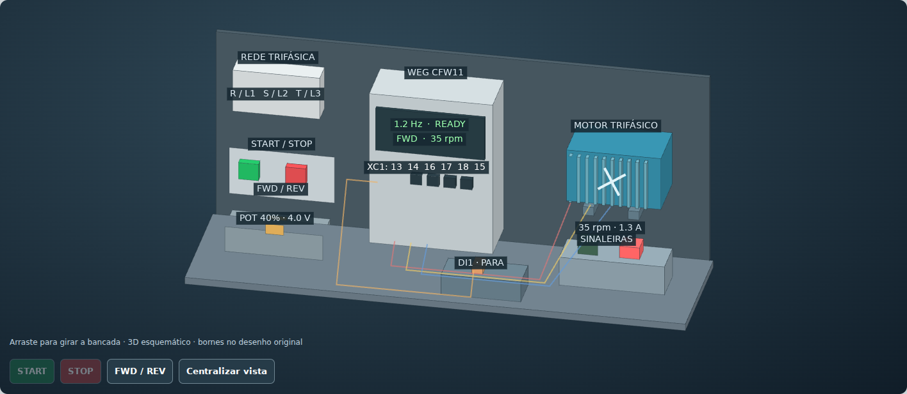

01 / ACIONAMENTOS ELÉTRICOSWEG CFW11
Explore o inversor, o motor e os comandos da bancada original.
Gira / ParaPotenciômetroBornes e parâmetros
O que posso fazer nesta bancada?
Alternar entre a vista 3D e o desenho dos bornes, usar START/STOP ou Gira/Para, variar a referência e acompanhar o motor e as sinaleiras.